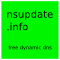

Plattformen / BSD /
DNS
Freie Empfehlungen

nsupdate.info
Ein freier Dynamic-DNS-Service. Nützlich, um einen einfachen DNS-Namen mit Deiner wechselnden / schlecht zu merkenden IP-Adresse zu aktualis…
Hinweise
Google Public DNS speichert Deine Internetprovider- und Standort-Informationen permanent für Analysen. Außerdem wird Deine IP-Adresse für 24 Stunden gespeichert.
OpenNIC hat keine offizielle Stellungnahme zu Logs und Anonymisierung gegeben. Mehr Infos hier (Englisch).
Proprietär
 Google Public DNS
Google Public DNS